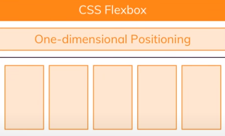
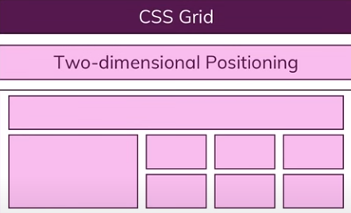
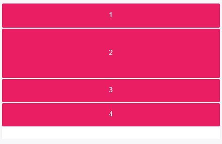
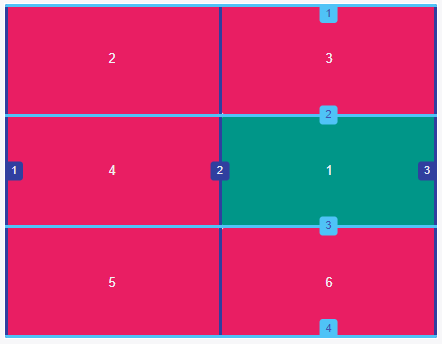
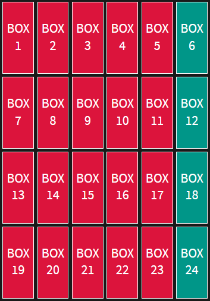
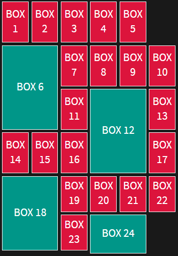
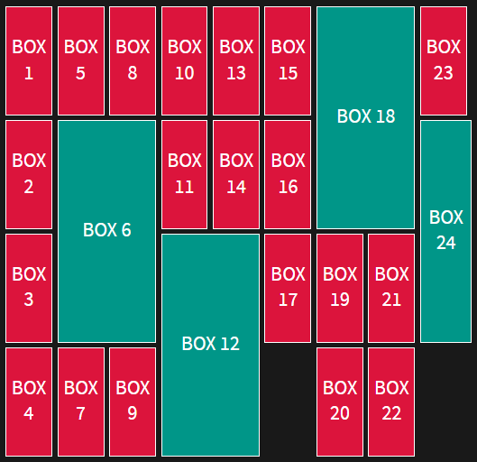
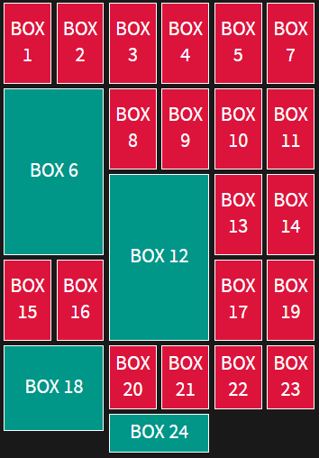

CSS Grid Layout
Tables

Floats

Positioning

Inline-block

But all of these methods left out a lot of important functionality.

display: flex;
display: flex;
width: 200px;
display: flex;
width: 150px;
flex-wrap: wrap;

display: grid;
Grid Container
Create a grid container by setting the display property with a value of grid or inline-grid.
All direct children of grid containers become grid items.
display: grid;
display: inline-grid;

Explicit Grid
Explicitly set a grid by creating columns and rows with the grid-template-columns and grid-template-rows
properties.
display: grid;
grid-template-rows: 50px 100px;

Because only 2 row tracks were defined, heights of items 3 and 4 are defined by the contents of each.
You can use all non-negative length value for track size values: px, rem, em, %, fr, etc.
display: grid;
grid-template-columns: 3rem 25% 1fr 2fr;
"fr" is a special css grid fractional unit which helps create
flexible grid tracks. It represents a fraction of the available space in the grid container.
Minimum and Maximum Grid Track Sizes
grid-template-rows: minmax(100px, auto);
grid-template-columns: minmax(auto, 50%) 1fr 3em;
The minmax() function accepts 2 arguments: the first is the minimum size of the track and the second the
maximum size.
Alongside length values, the values can also be auto, which allows the track to grow/stretch based on the
size of the
content.
Repeating Grid Tracks
grid-template-rows: repeat(4, 100px);
grid-template-columns: repeat(3, 1fr);
The repeat() notation accepts 2 arguments: the first represents the number of times the defined tracks
should repeat, and the second is the track definition.
Positioning Items by Grid Line Numbers
grid-row-start: 2;
grid-row-end: 3;
grid-column-start: 2;
grid-column-end: 3;

grid-row: 2 / 3;
grid-column: 2 / 3;
grid-area: 2 / 3 / 2 / 3
Implicitly Named Grid Lines
grid-template-areas: "header header"
"content sidebar"
"footer footer";
grid-template-rows: 80px 1fr 40px;
grid-template-columns: 1fr 200px;
header {
grid-area: header;
}
.main-block {
grid-area: content;
}
.sidebar {
grid-area: sidebar;
}
footer {
grid-area: footer;
}
But what if you don’t specify position of child elements in the grid and need complex grid layout?
In this case grid would assign position automatically.
CSS Grid of 24 box elements
BOX 1
BOX 2
BOX 3
BOX 4
BOX 5
BOX 6
BOX 7
BOX 8
BOX 9
BOX 10
BOX 11
BOX 12
BOX 13
BOX 14
BOX 15
BOX 16
BOX 17
BOX 18
BOX 19
BOX 20
BOX 21
BOX 22
BOX 23
BOX 24
.box {
border: 1px solid white;
background-color:crimson;
align-items: center;
display: flex;
justify-content: center;
font-size: 20px;
padding: 5px;
}
.grid {
display: grid;
grid-template-rows: repeat(4, 1fr);
grid-template-columns: repeat(6, 1fr);
grid-gap: 5px;
}
Higlith some blocks

.box:nth-child(6n) {
background-color: #009688;
}
Set "span" property

.box:nth-child(6n) {
background-color: #009688;
grid-column: span 2;
grid-row: span 2;
}
Set grid-auto-flow: column

.box:nth-child(6n) {
background-color: #009688;
grid-column: span 2;
grid-row: span 2;
grid-auto-flow: column;
}
Set grid-auto-flow: dense

.box:nth-child(6n) {
background-color: #009688;
grid-column: span 2;
grid-row: span 2;
grid-auto-flow: dense;
}
With "grid-auto-flow: dense" you can create with one line of code reach effects for photo gallery or market
places web layout in responsive design.
Video from:
https://labs.jensimmons.com/
Let's sum up
- CSS Grid is a powerful tool that allows for two-dimensional layouts to be created on the web.
- You can build a grid from any number of elements of different size.
- You can control rows and colomns and have access to any grid cell.
- CSS Grid has many features that make building complex layouts simpler. You can use different grid track sizes, special css grid functions such as minmax(), repeat(), also is possible define grid lines by numbers or names.
- "Grid-auto-flow" property controls how auto-placed items get inserted in the grid.
- You can always combine different web page layout methods. For example, CSS Grid and Flexbox models work together quite well.